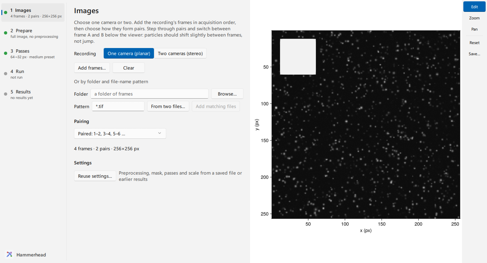
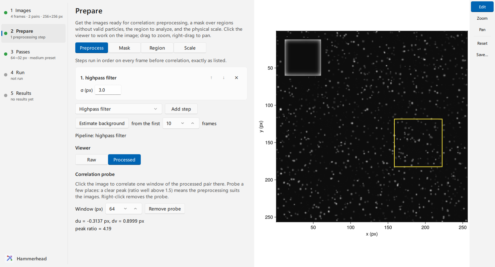
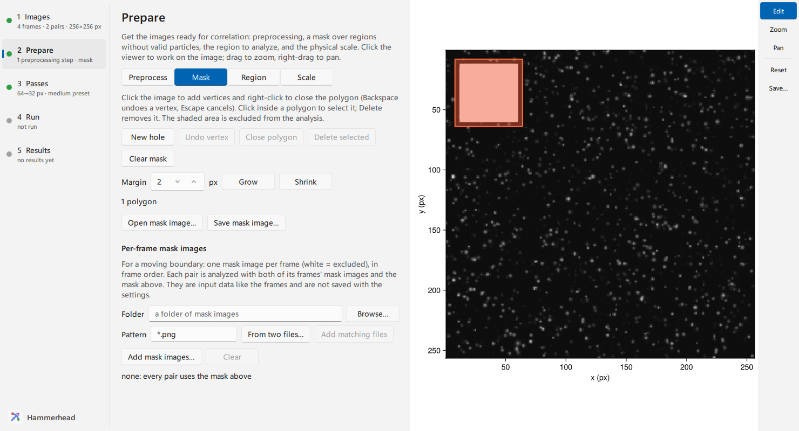
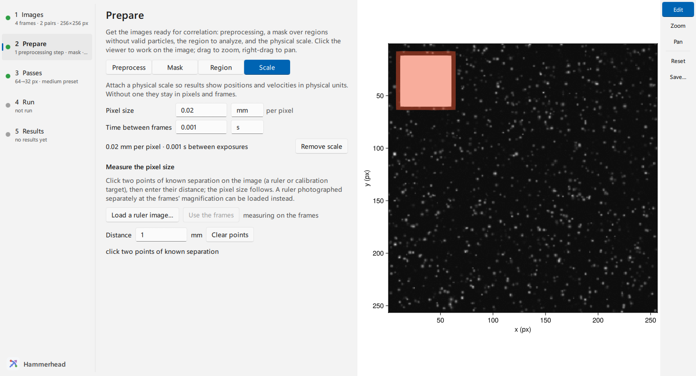
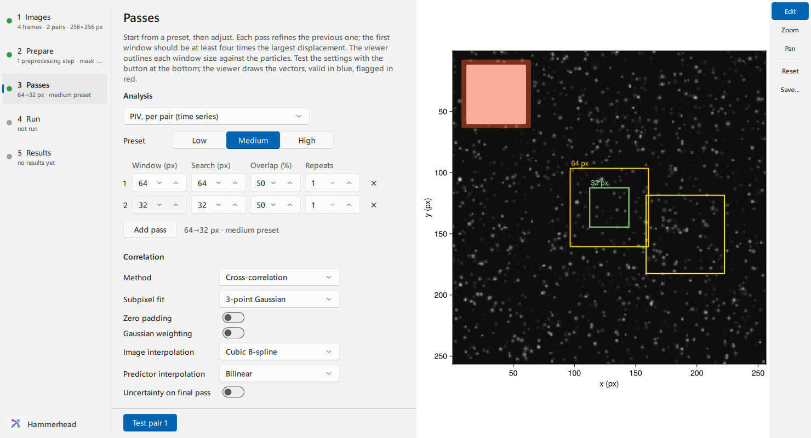
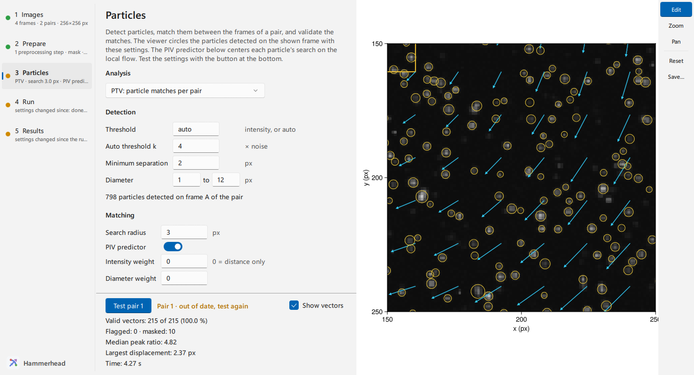
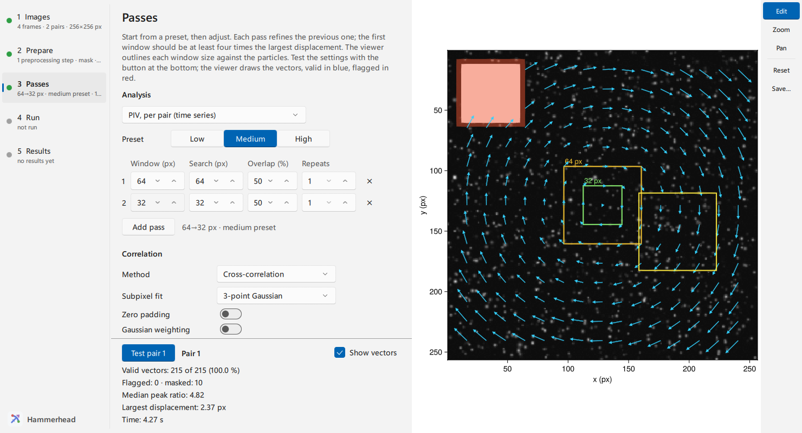
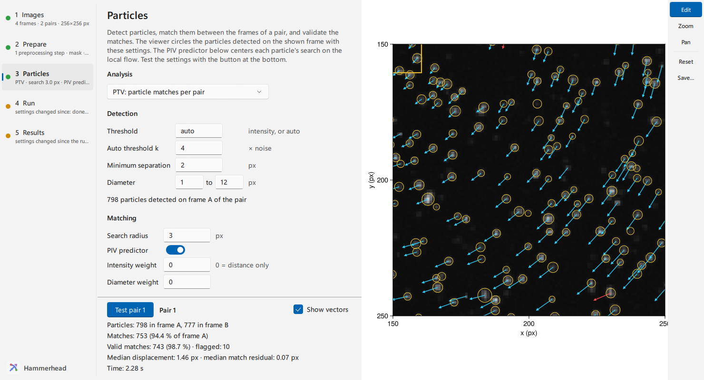
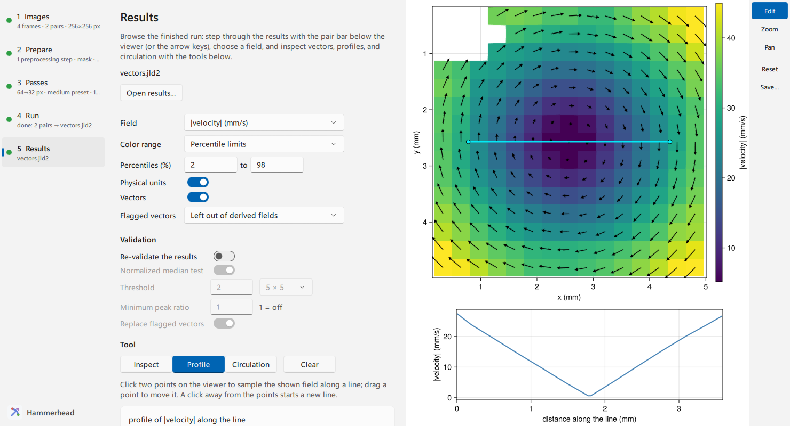

Analyze an image pair in the GUI
The Hammerhead window takes the frames of a recording through image checks, masking, the pass schedule, a test on one pair, the batch run, and the results. This page covers one-camera (planar) recordings; for two cameras see Run stereo PIV in the GUI. A PIV session in the GUI is a complete session on sample images.
Open the window
Install the GUI package with pkg> add HammerheadGUI. Start Julia with several threads, so tests, runs and previews leave the window responsive:
# julia -t auto
using HammerheadGUI
wf = hammerhead()The call returns when you close the window. It returns the window's session, a PlanarWorkflow for a one-camera recording, with every setting you made. Pass frames or saved settings to start further along: hammerhead(files = paths, settings = "settings.toml").
Recording at the top of Images chooses one camera (planar PIV and particle analysis) or two (stereo PIV, with a Calibration step). The window holds one recording at a time: changing the type starts a fresh session, and the window first lists what that discards (frames, unsaved settings, results kept only in memory). Opening settings or results of the other type switches the same way.
The steps on the left run in order: Images → Prepare → Passes → Run → Results. Each step shows a one-line summary, and a dot marks it as to do, done, needing attention, or busy; Prepare and Passes stay grey until the frames on Images form pairs. Changing a setting after a test or run marks Passes, Run and Results as needing attention until they are repeated. The viewer on the right follows the step: frames and overlays while you prepare, window outlines and the test's vectors on Passes, vectors of the latest pair on Run, and the result field on Results. The toolbar at the viewer's right edge sets what a drag does: Edit (the default: clicks work on the open step, a left-drag zooms to a box, a right-drag pans), Zoom (drag a box; clicks do not edit) and Pan (drag to move). The wheel zooms in every mode; Reset (or ctrl+click) shows the whole image, and Save… writes the viewer as a PNG image. Auto contrast in the bar below stretches the displayed intensities; the analysis always uses the frames' values. Pop out viewer in the window's toolbar moves the viewer into its own window, for a second screen. Closing that window docks the viewer again.
Keys: ← and → step through the pairs (on Results, through the results); A and B, or shift+← and shift+→, switch between frame A and B.
Add the frames
On Images, click Add frames… and select the frames, or give a Folder and a file-name Pattern (* matches any run of characters, ? one character) and click Add matching files; matching files are added in natural order, so frame_2 comes before frame_10. From two frames… derives the folder and pattern from two frames of the recording, for example the first pair. Then choose Pairing: Paired for separate A/B exposures (1–2, 3–4), Chained for a uniformly sampled sequence (1–2, 2–3). The bar at the bottom of the window selects the representative pair and switches between frame A and frame B. Previews, probes, window outlines and the test use this pair. Choose one with the flow features you care about; dim or fast regions are good checks.

Frames load in the background. The step rail shows "loading…" until a new pair arrives, and the viewer keeps the previous one meanwhile. Reuse settings… takes the settings of a saved settings file or of an earlier run's results file.
Prepare the images
Prepare has four pages. Clicks on the viewer go to the open page.
Preprocess and probe the correlation
Add steps with Add step; they run in the listed order on every frame before correlation. The arrows reorder a step, ✕ removes it, and each option is edited in place. Estimate background takes the pixel-wise minimum of the first frames and subtracts it as the first step. It runs in the background; a status line reports progress.
Switch the viewer between Raw and Processed, then click the image to place the correlation probe. The probe correlates one window of the processed pair there and reports the displacement and the peak ratio. A ratio well above 1.5 means a clear match. Probe a few places, including weak regions. The preview runs exactly the preprocessing the batch runs, so what you see is what will be correlated. Build a preprocessing chain explains when each operation helps.

Mask walls and reflections
On Mask, click the image to add polygon vertices and right-click to close the polygon. The shaded area is excluded from the analysis.
- Backspace undoes the last vertex; Escape cancels the polygon.
- Click inside a finished polygon to select it; Delete removes it.
- New hole makes the next polygon restore an area inside an excluded region.
- Grow and Shrink widen or narrow the excluded area by a margin. The polygons then become a fixed raster mask, which you can still draw on.
- Open mask image… reads a mask file (white = excluded), and Save mask image… writes one.

This mask is static: it stays in the lab frame for every pair. For a boundary that moves, add Per-frame mask images below it: one image per frame (white = excluded), in frame order, chosen as files or by folder and pattern as on Images. Each pair is analyzed with both of its frames' mask images and the static mask, and the viewer shades the representative pair's combined mask. Mask images are input data like the frames, so they are not saved with the settings; they apply to PIV per pair and PTV. For automatic masks and the masking model, see Mask reflections and geometry.
Analyze part of the frame
On Region, click two opposite corners on the image or type inclusive row and column bounds, then Apply bounds. Full image removes the region. Results keep the original image coordinates, and the pass presets size themselves to the region.
Attach a physical scale
On Scale, type the pixel size with its length unit and the time between the paired exposures with its time unit. For example, 0.02 mm per pixel and 0.001 s. To measure the pixel size, click two points of known separation on the image, such as ruler marks, and type their Distance. Load a ruler image… measures on a separate photograph of a ruler or target taken at the frames' magnification instead; Use the frames returns to the frames. Without a scale, results stay in pixels and frames. Vectors are always computed in pixels; the scale converts what the results show (see Scale results to physical units).

Choose the passes
Analysis at the top of Passes chooses what the window measures: PIV per pair, a PIV ensemble, particle matches per pair (PTV), or particle tracks through the frames. For PIV, click a preset: Low, Medium or High. The preset fills the pass table for the frame or region size; edit any cell to make the schedule your own. The first window should be at least four times the largest displacement. The viewer outlines each window size against the particles to help you judge this. Choose an effort level explains the trade-off.
Below the table:
- Correlation: method, subpixel fit, Zero padding and Gaussian weighting (together the most accurate setting), the deformation's Image interpolation (cubic B-spline, or faster bilinear with a sub-pixel bias) and Predictor interpolation (bilinear, or cubic for strongly curved flow), and per-vector Uncertainty on final pass.
- Validation: the normalized median test (threshold and neighborhood), a minimum peak ratio, and whether flagged vectors are replaced.
- Correlation probe: click the viewer to correlate one window of the final pass's size on the processed pair, as on Preprocess.
- Precision: Float32 halves the memory of Float64.
- Run on the GPU: tests and runs use CUDA (NVIDIA) or AMDGPU (AMD) when one of those packages is installed in the environment. The first switch-on loads the package, which takes a while. GPU backends cover PIV per pair and ensembles with the default interpolation, equal search and window sizes, and the 3- or 9-point subpixel fit; with a setting outside that range the switch is greyed out and its tooltip names the setting. Particle analysis runs on the CPU, so the particle modes have no switch. See Run PIV on a GPU.
A PIV ensemble sums the correlation over all pairs into one mean field (see Measure one field from many pairs). The window tests an ensemble on the first ten pairs and runs it on all pairs. An ensemble runs each pass once, so the Repeats column is unavailable; add a pass to repeat a window size.

Match or track particles
Choose PTV or Particle tracking under Analysis to follow individual particles instead of correlating windows. The step is then called Particles, and the viewer circles the particles detected on the shown frame, after preprocessing and inside the mask, as you change the settings:
- Detection: an auto threshold (median plus k times the frame's noise) or an intensity, the minimum separation between particles, and the range of particle diameters. The count under the settings follows each change.
- Matching: the Search radius around each particle's predicted position in the second frame. With PIV predictor on, the pass table below runs first and centers each search on the local flow, so the radius only has to cover the prediction's error; turn it off for displacements smaller than the radius. Intensity and diameter weights make matching prefer particles that look alike.
- Validation: a normalized median test against neighboring matches flags outliers; flagged matches stay in the result, marked.
- Tracks (tracking only): the shortest track kept and how many missed frames a track may bridge.

Tracking follows every frame in the order listed on Images, so it needs a time-resolved recording; the pairing there only picks the representative pair. Particle analysis covers whole frames: use a mask rather than a region. See Track particles for the method.
Test one pair
The bar at the foot of Passes stays in view while you scroll the settings. Click Test pair there (or Test ensemble, which uses the first ten pairs). The test runs the same call the batch will run. It reports the valid and flagged fractions, the median peak ratio, the largest displacement and how long the test took, with the change from the previous test. The viewer draws valid vectors in blue and flagged vectors in red over the window outlines; Show vectors hides them, for instance to place the correlation probe on the particles underneath. When you change a setting or the representative pair, the bar says the test is out of date until you test again.

Many red vectors usually mean the first window is too small for the displacement, or that a region needs a mask or preprocessing. Tune validation covers the outlier test.
In PTV mode the test matches the particles of the representative pair and reports the particle counts, the share of frame-A particles matched, the valid matches, and the median displacement and match residual; the viewer shows each match as an arrow. A tracking test follows up to ten frames from the representative pair and draws the tracks.

Run the recording
On Run, choose an output file with Browse… (leave it empty to keep results in memory), then click Run. Results are written as each pair finishes, together with the settings that produced them. The viewer shows the latest finished pair, with elapsed time and an estimate of the time left. Cancel stops after the pair in progress and keeps the finished ones. Clear empties the output path. Results kept in memory can still be written afterwards with Save results…, together with their settings and frame paths, without running again. Closing the window also cancels a run in this way.
An ensemble run (Run ensemble of N pairs) pools every pair into one result, which is written with the settings when the run finishes. Its progress counts the pairs of each pass. Canceling an ensemble stops after the pair in progress and keeps no result.
A PTV run writes one particle result per pair, like a PIV run. A tracking run (Track through N frames) writes one set of tracks when it finishes; its progress counts frame steps, and canceling keeps no result.
Inspect the results
When a run finishes, Results holds its output. Open results… browses another results file; entries load one at a time.
- The pair bar below the viewer (or ← / →) steps through the results, independently of the representative pair of the earlier steps.
- Field chooses what is colored: components, magnitude, diagnostics, derived fields such as vorticity (signed fields use a diverging scale centered on zero), and the particle image of the result's pair, whose frame Frame A / Frame B (or A / B) switch.
- Color range: Percentile limits take the given percentile band of the valid values (2–98 % by default); Absolute limits pin both ends, starting from the range shown, and keep them across results.
- Physical units (with a scale attached) switches between physical and measured units.
- Flagged vectors sets whether derived fields, profiles and circulation use flagged vectors (with their replacement values) or leave gaps.
- Validation › Re-validate the results checks the shown vectors again with other outlier-test settings and optional replacement. Only the display changes; the results are unchanged.
- Inspect: click a vector to read its position, components and status.
- Profile: click two points to sample the shown field along a line. A panel under the field plots it.
- Circulation: click contour vertices and right-click to close the contour. The summary gives Γ from the line integral and from the enclosed vorticity, and the covered fraction when masked or flagged cells leave gaps.
- Drag a profile endpoint or contour vertex to move it; the profile or circulation follows. Click a point and press Delete to remove it.
- Clear (or Escape on the viewer) removes the line or contour.

PTV results show each particle colored by the chosen field with its displacement; tracks are drawn as lines colored by mean speed, broken where a track bridged missed frames. With a scale attached, axes, color bars and summaries use its units. Profile and circulation need a planar PIV result. Check flagged vectors and the mask before you interpret derived quantities, because derivatives amplify local errors.
Save and reuse the settings
Save settings… writes the passes, preprocessing, mask, region and scale to a recipe file: plain TOML text, with the mask and any background as image files beside it (choose a .jld2 name for a single file instead). Open settings…, or Reuse settings… on Images, reads a recipe file or the settings stored in any results file. A dot after the title in the window bar marks unsaved changes. Settings files are core recipes, so a script can run them with apply_recipe. See Save settings and reuse them.
Browse a results file without the workflow
The standalone result explorer opens a completed file and loads one entry at a time:
using HammerheadGUI
result_explorer("vectors.jld2"; lazy = true)It browses planar and stereo PIV, PTV particles and trajectories. The result explorer reference lists its fields and tools.
Open it in its own Julia session. The explorer is a GLMakie window, and GLMakie windows and the workflow windows cannot share a session (some graphics drivers crash): once a GLMakie window exists, hammerhead throws an error asking you to restart Julia, and result_explorer warns when a workflow window was already open. Within the workflow window, browse results on Results.
Work with two cameras
For a stereo rig, choose Two cameras (stereo) on Images (or start with hammerhead(type = :stereo)): the window adds a Calibration step and runs both cameras on a common dewarped grid; the other steps are the ones above. See Run stereo PIV in the GUI.
Script the window's steps
Every button calls a function on the workflow's controllers in HammerheadGUI.Controllers, so the same steps run without a window. The GUI tour shows the code next to each click, and the GUI reference lists the functions.